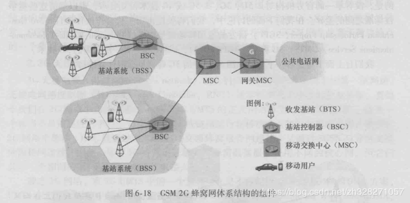

一、概述：
这篇文章主要是讨论无线网络和移动网络即我们一般所说的WiFi和手机网络.主要分为4个部分
第一部分引言主要大致的描述一下无线网络和移动网络的特点以及和有限网络的区别
第二部分讨论WiFi
第三部分讨论蜂窝网络.由于有线网络和和无线网络的最大区别在于无线网络可以移动而且需要保持网络的连接
第四部分会讨论无线网络的移动管理.
名词简介：
- 无线主机（wireless host）。端系统。
- 无线链路（wireless communication link）。主机连接基站或另一台主机。
- 基站（base station）。主机和基站关联：主机位于基站的无线通信覆盖范围，且主机使用基站中继和更大的网络的数据。例如，蜂窝网中的 蜂窝塔（cell tower），Wifi中的接入点（access point）。
- 网络基础设施。与主机通信的更大的网络。
与基站关联的主机以基础设施模式（infrastructure mode）运行，传统网络服务（地址分配、路由选择）通过基站提供给主机。自组织网络（ad hoc network）中，主机不与基站相连，主机本身提供这些服务。
无线网络类型。标准：无线网分组跨越的无线跳、是否有基础设施。
- 单跳、基于基础设施。802.11、3G蜂窝网等。
- 单跳、无基础设施。蓝牙、自组织模式的802.11
- 多跳、基于基础设施。结点通过无线结点中继通信，连接到基站，如无线网状网络。
- 多跳、无基础设施。移动自组织网络，包括车载自组织网络。
二、无线链路和网络特征
2.1、与有限链路的区别
无线链路和有限链路最主要的区别如下:
- 递减的信号强度:随着阻碍物和距离的增加,信号的强度会有相当大的损失
- 来自其他源的干扰:无线信号会被其他源的无线信号干扰到,比如电磁炉
- 多径传播:同一个信号可能会经过多种物质的反射从而在不同时间点传播的同一接收点中.
2.2、会产生的问题
由于信号的减弱和障碍物的作用,所以无线链路通信会产生一些有线链路所没有的问题
- 信噪比SNR:即信号和噪音的比值,用于衡量信号的优劣,值越高代表信号越好,相反,若太低,则表明噪声太多,信号质量差
- 比特差错率BER:在无线链路的特性决定了传输的数据容易出现比特差错,BER用于衡量这一参数
- 隐藏终端问题:基站是需要多路访问协议即MAC协议来控制多个无线主机向此基站发送的数据,通常采用CSMA(码多分址),其原理已经介绍过了,主要就是将每一个比特乘以一个特殊的编码在接收端再次解码,通过不同的无线站点分配不同的编码以解决碰撞的问题.原理如下图:

而无线链路的情况不同于有线链路,它很有可能是检测不到其他无线主机正在想基站发送数据的,比如其中一台无线主机被大山挡住,导致另一台主机不能接收到此主机正在发送数据的信号,再比如说,随着位置的增加,可能会有基站可以接受到两台无线主机信号而两台无线主机之间不能接受到彼此的信号的情况.这就被称为隐藏终端问题.如下图:
三、Wifi(802.11无线LAN)
3.1、分类
无线网络所使用的WiFi协议有许多种,他们分别有不同的频率范围和传输速度,如以下三种协议
3.2、组成
无线网络主要由两部分组成,一是基本服务集BSS,包括无线站点和接入点AP,他们都具有唯一的MAC地址,二是分组交换机,BSS就是通过分组交换机与因特网连接.如下图:

3.3、信道与关联
那么无线站点是如何通过上图中的体系结构连接如互联网的呢?
每个基本服务集BSS都拥有一个SSID,用于唯一标识,WiFi协议信道的频率可以分为11个部分,他们互相之间有重叠,只有1,6,11号信道之间是完全没有重叠的,所以可以在一个物理网络中使用三个信道,每个基站都有自己的信号范围,那么我们定义WiFi丛林的概念,即无线站点在任意物质可以接收到多个基站所发出的信号,那么在这种情况之下,无线站点如何同基站关联的?
主要有两种方法:
- 被动扫描:每个接入点AP都会周期性的发送信标帧,信标帧中包括该AP的SSID和MAC地址,无线站点为了关联AP,就会扫描11 个信道,然后选择一个与之关联
- 主动扫描:无线主机会向所有在其范围内的AP广播探测帧,AP接收到探测帧后会发送探测响应帧给无线站点,然后无线站点和AP关联
3.4、MAC协议
我们在无线链路可能会遇到的问题中已经描述过隐藏终端问题,WiFi有时如何解决碰撞和处理隐藏终端问题的呢?
WiFi所使用的MAC协议叫做CSMA/CA,CSMA即是载波侦听,其原理同以前讲述的一样,他会检测其他无线站点是否正在发送数据,如果是则停止传输,知道信道空闲.但是和以前不同的是,CA是碰撞避免,而不是CD碰转检测,因为CD完全不适用于无线链路,其一,两个无线站点之间如果需要互相检测到对方的发送信号所需的成本太大,其二,即使可以互相检测到信号,也会因为隐藏终端问题导致大量的重传.
碰撞避免CA的原理是:
- 在发送信号之前,即侦听到信道空闲时,会在一个分布式帧间间隔DIFS的短时间后发送数据帧.
- 若信道繁忙,会选取一个随机回退值,每当侦听到信道空闲时此回退值就会减小,信道繁忙则会冻结回退值,当回退值为0时,发送数据帧
- 发送数据帧并等待确认,目的地则会在等待一个被称为短帧间间隔SIFS的短时间后发送确认帧.
- 如果源收到确认帧,表示被正确接收了,需要发送其他帧会从第二部开始.如果未收到确认,进入第二部的回退阶段,并从更大的范围选取回退值
而为了解决隐藏终端问题,在上述的基础上,源会在传输数据帧之前发送一个请求发送控制帧RTS,其中包含了此次传输需要的总时间,目的地在接收到RTS后等待SIFS的短时间,会广播一个允许发送控制帧CTS,CTS的目的是给发送方明确的发送许可及禁止其他无线站点在预约的时间内发送数据帧,但是这种处理方式会消耗信道资源,所以只有需要交换长数据时才会使用.
3.5、帧结构
802.11协议(WiFi)所使用的帧的结构如下图所示:
- 帧控制:包含许多子字段,类型和子类型用于区分管理,RTS,CTS,ACK和数据帧,WEP用于知识是否加密,to,from定义不同地址字段的含义等等,不做具体描述
- 持续期:表示预约信道的时间,即在上文中描述的如何处理隐藏终端问题的预约时间
- 地址一:源MAC地址
- 地址二:接收该帧的设备的MAC地址
- 地址三:AP所连的交换机的MAC地址,是基本服务集BSS和因特网连接的关键
- 序号控制:用于区分帧的重传和新的发送
- 地址四:用于自组织间的MAC地址
- 有效载荷:存放数据
- CRC:循环冗余检测字段
3.6、高级特色
802.11协议可以实现一些高级的功能,比如速率适应,无线站点会要求越来越多的带宽,知道接入点AP说”够了”,功率管理可以让无线 站点向接入点AP发送一个帧以设置一个定时器,无线站点进入睡眠模式,知道接入点在发送下一个信标帧时,唤醒该节点.
四、蜂窝因特网
4.1、2G
以下是2G网络的组成,统称为GSM蜂窝网体系:

- 基站控制器BSC:连接几十个基站,执行寻呼,移动用户的切换
- 移动交换中心MSC:用于用户鉴别和账户管理,一级呼叫建立和切换
- 网关MSC:与更大的网络相连
4.2、3G

在2G的基础上,将BSC换为了RNC,并添加了一些新设备
五、802.15协议
除了WiFi和蜂窝网络之外,还有其他的无线网络,这里只做极其简单的介绍,
- 蓝牙:使用802.15.1协议,以TDM方式工作于无需2.4GHz无线电波段,存在主设备和从设备之分,使用自组织模式,形成一个皮可网.

- ZigBee:多个简化功能设备在单个全功能设备控制下运行.
最后给一张思维导图